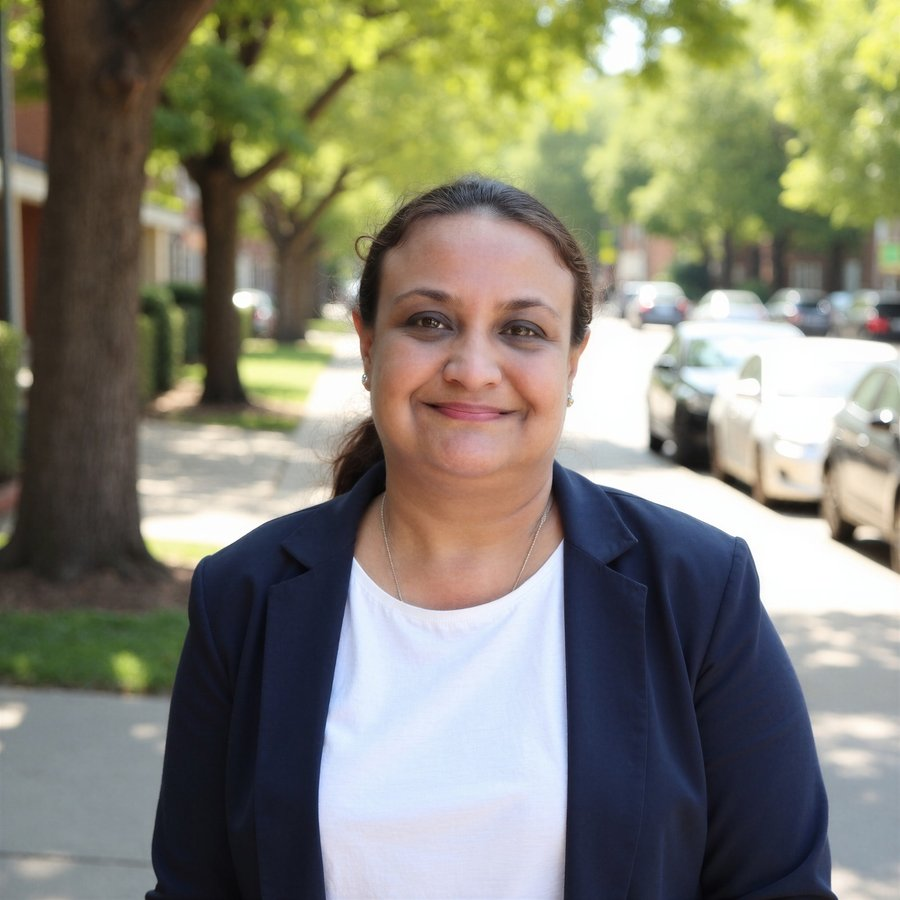

Every board faces a question that gets harder as technology moves faster: is the company's customer-facing tech actually working, or just reporting that it is? When retention slips, when a partner model fails under volume, when AI tools deployed in live operations create risk no one mapped beforehand — those problems reach the board too late.
Twenty-two years across SaaS, managed services, and enterprise technology provide that depth. At Sprinklr, a ₹500 crore-plus ARR product success book was governed across three geographies: retention moved from ~80% to 90%+ by diagnosing adoption gaps and rebuilding the delivery model. Sprinklr's first-ever outsourced support arrangement was designed and executed — a 100-person Cognizant partner team at 90%+ SLA by Q2. A 2,000-agent regulated BFSI deployment was run under user-governance and access controls a banking compliance team could stand behind.
The value on offer is oversight: accurate information to the board, the right questions raised, and decisions that protect the company's capacity to perform.
Ministry of Corporate Affairs — Qualified, July 2026. IICA Data Bank registered (Lifetime).
"The Power of Belief" — a book on mindset and leadership, available on Amazon India.
Active thought-leadership series on LinkedIn since June 2026, connecting AI regulation to operational reality.
Platform and product-delivery governance certification, earned in role.
Operational experience, not theory — each area below is grounded in something built, fixed, or governed at scale.
22 years in enterprise SaaS and tech operations. Ran omni-channel digital transformation across chat, email, voice, and community for 2,500+ customers at Sprinklr.
Moved managed-services retention from ~80% to 90%+ on a $90–100M book by rebuilding delivery around value realisation. CSAT held at 9.5/10 across 13,500+ monthly tickets.
Designed and ran SLA governance across 110+ support engineers and a 100-person partner team. Process manuals, escalation frameworks, and quality-audit systems built from scratch.
Conceived and executed Sprinklr's first-ever outsourced support arrangement — onboarding, certification, and 90%+ SLA compliance delivered by Q2.
Operational experience deploying AI-enabled support tools and omni-channel automation. Active thought leadership on AI governance for boards since June 2026.
Built and scaled delivery teams from zero at two organisations. Designed capability pathways and certification programmes for 150+ engineers.
A customer-growth and digital-transformation lens on governance — scaling organisations, improving customer outcomes, and navigating complex stakeholder environments, with an emerging focus on responsible AI.
"The Power of Belief" — a book on mindset and leadership, available on Amazon India.
Ongoing LinkedIn content since June 2026 — a 20-post topic bank on customer operations governance, retention risk, and AI oversight for boards.
Active mentor to professionals across product, implementation, project management, and services functions.
IICA Alumni Network · NASSCOM · SaaSBoomi · iSpirt ProductNation · Women in SaaS India · ICSI Bengaluru Chapter
Ministry of Corporate Affairs / IICA — Qualified, July 2026. IICA Data Bank registered (Lifetime).
Narsee Monjee Institute of Management Studies, Bengaluru, 2006
Jorhat Engineering College (Dibrugarh University), Assam, 2002
Sprinklr University — product delivery and platform governance certification, earned in role.
Industry-recognised digital marketing and analytics credential.
Covering audit committee responsibilities, financial statement analysis, and going-concern risk.
Open to board roles, advisory engagements, and thought-leadership conversations across SaaS, enterprise technology, and managed services.